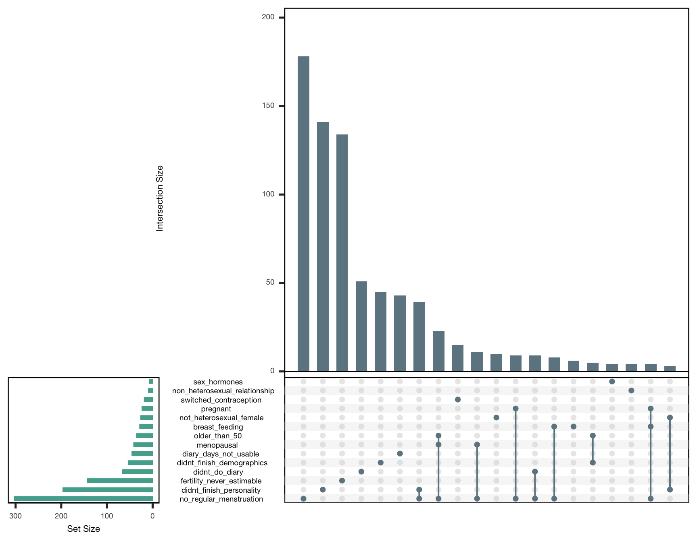
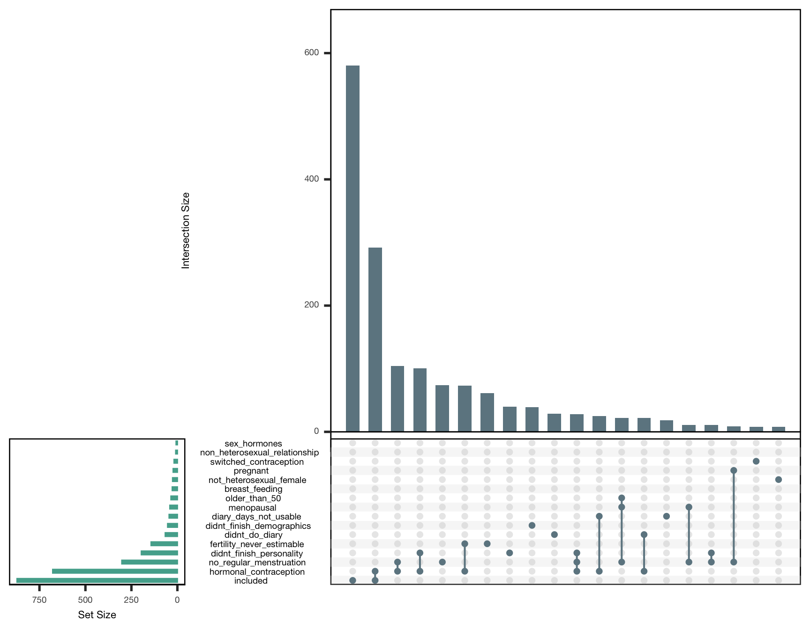

source("0_helpers.R")
library(tidylog)
load("data/cleaned.rdata")
library(knitr)
opts_chunk$set(fig.width = 9, fig.height = 7, cache = T, warning = T, message = T, cache = F, error = FALSE)
comma_separated_to_columns <- function(df, col) {
colname <- deparse(substitute(col))
df$splitcol <- df %>% pull(colname)
separate_rows(df, splitcol, convert = TRUE, sep = ", ") %>%
mutate(splitcol = if_else(is.na(splitcol), "no",
if_else(splitcol == "" |
splitcol %in% c(), "included", as.character(splitcol)))) %>%
mutate(#splitcol = stringr::str_c(colname, "_", splitcol),
value = 1) %>%
spread(splitcol, value, fill = 0) %>%
select(-colname)
}
all_survey_length <- nrow(all_surveys)
diary_length <- nrow(diary)
diary_social_length <- nrow(diary_social)Lab participants that did not do the online diary (not merged)
diary <- diary %>%
mutate(reasons_for_exclusion_diary = str_c(reasons_for_exclusion_diary,
if_else(is.na(session), "lab_only, ", "", "")
)
)## mutate: no changesDisclosed that they responded dishonestly on that day.
diary <- diary %>%
mutate(reasons_for_exclusion_diary = str_c(reasons_for_exclusion_diary,
if_else(dishonest_discard == 1, "dishonest_answer, ", "", "")
)
)## mutate: changed 150 values (<1%) of 'reasons_for_exclusion_diary' (0 new NA)Did not finish diary entry.
diary <- diary %>%
mutate(reasons_for_exclusion_diary = str_c(reasons_for_exclusion_diary,
if_else(is.na(ended_diary) & !is.na(modified_diary), "did_not_finish_entry, ", "", "")
)
)## mutate: changed 856 values (1%) of 'reasons_for_exclusion_diary' (0 new NA)Cycle shorter than 20 days.
diary <- diary %>%
mutate(reasons_for_exclusion_diary = str_c(reasons_for_exclusion_diary,
if_else(coalesce(minimum_cycle_length_diary, as.numeric(menstruation_length)) < 20, "cycle_shorter_than_20, ", "", "")
)
)## mutate: changed 4,736 values (6%) of 'reasons_for_exclusion_diary' (0 new NA)Cycle longer than 40 days.
diary <- diary %>%
mutate(reasons_for_exclusion_diary = str_c(reasons_for_exclusion_diary,
if_else(coalesce(minimum_cycle_length_diary, as.numeric(menstruation_length)) > 40, "cycle_longer_than_40, ", "", "")
)
)## mutate: changed 7,461 values (10%) of 'reasons_for_exclusion_diary' (0 new NA)Next menstrual onset not observed
diary <- diary %>%
mutate(reasons_for_exclusion_diary = str_c(reasons_for_exclusion_diary,
if_else(
menstruation_regular == 1 &
coalesce(minimum_cycle_length_diary, as.numeric(menstruation_length)) <= 40 &
coalesce(minimum_cycle_length_diary, as.numeric(menstruation_length)) >= 20 &
is.na(fertile_fab), "next_menstrual_onset_unobserved, ", "", "")
)
)## mutate: changed 4,100 values (5%) of 'reasons_for_exclusion_diary' (0 new NA)Skipped this diary day (days after dropping out not included)
diary <- diary %>%
mutate(reasons_for_exclusion_diary = str_c(reasons_for_exclusion_diary,
if_else(is.na(ended_diary) & is.na(modified_diary), "skipped_diary_entry, ", "")
)
)## mutate: changed 15,321 values (20%) of 'reasons_for_exclusion_diary' (0 new NA)usable_diary_days <- diary %>% group_by(session) %>%
summarise(usable_diary_days = any(reasons_for_exclusion_diary == ""))## group_by: one grouping variable (session)## summarise: now 1,373 rows and 2 columns, ungroupedWe create a character variable reasons_for_exclusion. We will concatenate (abbreviated) reasons for exclusion in this variable.
Did not finish demographics survey
all_surveys <- all_surveys %>%
mutate(reasons_for_exclusion = str_c(reasons_for_exclusion,
if_else(is.na(ended_demo), "didnt_finish_demographics, ", "")
)
)## mutate: changed 53 values (3%) of 'reasons_for_exclusion' (0 new NA)Reported no regular menstruation
all_surveys <- all_surveys %>%
mutate(reasons_for_exclusion = str_c(reasons_for_exclusion,
if_else(menstruation_regular == 0, "no_regular_menstruation, ", "", "")
)
)## mutate: changed 302 values (18%) of 'reasons_for_exclusion' (0 new NA)Menopausal or in climacteric period
all_surveys <- all_surveys %>%
mutate(reasons_for_exclusion = str_c(reasons_for_exclusion,
if_else(menopause_yes == 1 | menopause_yes == 2, "menopausal, ", "", "")
)
)## mutate: changed 41 values (2%) of 'reasons_for_exclusion' (0 new NA)Older than 50
all_surveys <- all_surveys %>%
mutate(reasons_for_exclusion = str_c(reasons_for_exclusion,
if_else(age >= 50, "older_than_50, ", "", "")
)
)## mutate: changed 35 values (2%) of 'reasons_for_exclusion' (0 new NA)Pregnant
all_surveys <- all_surveys %>%
mutate(reasons_for_exclusion = str_c(reasons_for_exclusion,
if_else(pregnant == 1, "pregnant, ", "", "")
)
)## mutate: changed 23 values (1%) of 'reasons_for_exclusion' (0 new NA)Breast-feeding
all_surveys <- all_surveys %>%
mutate(reasons_for_exclusion = str_c(reasons_for_exclusion,
if_else(breast_feeding == 1, "breast_feeding, ", "", "")
)
)## mutate: changed 28 values (2%) of 'reasons_for_exclusion' (0 new NA)Not primarily heterosexual. This excludes women who reported being equally interested in men and women, women who reported being asexual or aromantic, and participants who did not identify as female gender.
all_surveys <- all_surveys %>%
mutate(reasons_for_exclusion = str_c(reasons_for_exclusion,
if_else(sex_orientation >= 4 | gender != 1, "not_heterosexual_female, ", "", "")
)
)## mutate: changed 26 values (2%) of 'reasons_for_exclusion' (0 new NA)Did not finish personality survey
all_surveys <- all_surveys %>%
mutate(reasons_for_exclusion = str_c(reasons_for_exclusion,
if_else(!is.na(ended_demo) & is.na(ended_initial), "didnt_finish_personality, ", "")
)
)## mutate: changed 196 values (12%) of 'reasons_for_exclusion' (0 new NA)Changed contraception
all_surveys <- all_surveys %>%
mutate(reasons_for_exclusion = str_c(reasons_for_exclusion,
if_else(change_to_nonhormonal != 0 | change_to_hormonal_contraception != 0, "switched_contraception, ", "", "")
)
)## mutate: changed 18 values (1%) of 'reasons_for_exclusion' (0 new NA)Taking sex hormones (other than the pill)
all_surveys <- all_surveys %>%
mutate(reasons_for_exclusion = str_c(reasons_for_exclusion,
if_else(medication_name %contains% "Cycloprognova" |
medication_name %contains% "Cyproderm" |
medication_name %contains% "DHEA" |
medication_name %contains% "Hormone" |
medication_name %contains% "Cyclo-Progynova" |
medication_name %contains% "Femoston" |
medication_name %contains% "Gynokadin", "sex_hormones, ", "", "")
)
)## mutate: changed 7 values (<1%) of 'reasons_for_exclusion' (0 new NA)No diary days
all_surveys <- all_surveys %>%
left_join(diary %>% group_by(session) %>% summarise(diary_days = n_nonmissing(ended_diary)), by = 'session') %>%
mutate(reasons_for_exclusion = str_c(reasons_for_exclusion,
if_else(!is.na(ended_initial) & diary_days == 0, "didnt_do_diary, ", "", "didnt_do_diary, ")
)
)## group_by: one grouping variable (session)## summarise: now 1,373 rows and 2 columns, ungrouped## left_join: added one column (diary_days)## > rows only in x 287## > rows only in y ( 0)## > matched rows 1,373## > =======## > rows total 1,660## mutate: changed 66 values (4%) of 'reasons_for_exclusion' (0 new NA)Fertility never estimable
all_surveys <- all_surveys %>%
left_join(diary %>% group_by(session) %>% summarise(fertility_days = n_nonmissing(fertile_fab)), by = 'session') %>%
mutate(reasons_for_exclusion = str_c(reasons_for_exclusion,
if_else(menstruation_regular != 0 & diary_days > 0 & fertility_days == 0,
"fertility_never_estimable, ", "", "")
)
)## group_by: one grouping variable (session)## summarise: now 1,373 rows and 2 columns, ungrouped## left_join: added one column (fertility_days)## > rows only in x 287## > rows only in y ( 0)## > matched rows 1,373## > =======## > rows total 1,660## mutate: changed 143 values (9%) of 'reasons_for_exclusion' (0 new NA)all_surveys <- all_surveys %>% left_join(usable_diary_days, by = "session") %>%
mutate(reasons_for_exclusion = str_c(reasons_for_exclusion,
if_else(menstruation_regular != 0 & diary_days > 0 & fertility_days > 0 & !usable_diary_days, "diary_days_not_usable, ", "", "")
)
)## left_join: added one column (usable_diary_days)## > rows only in x 287## > rows only in y ( 0)## > matched rows 1,373## > =======## > rows total 1,660## mutate: changed 45 values (3%) of 'reasons_for_exclusion' (0 new NA)Women who are in monogamous heterosexual relationships
all_surveys <- all_surveys %>%
mutate(reasons_for_exclusion = str_c(reasons_for_exclusion,
if_else(hetero_relationship == 0 & relationship_status != 1, "non_heterosexual_relationship, ", "", "")
)
)## mutate: changed 9 values (1%) of 'reasons_for_exclusion' (0 new NA)How to read this plot: The horizontal green bars show for how many women this reason for exclusion applies. The blue bars show how many women are excluded for multiple reasons (e.g., they’re menopausal and not heterosexual). If reasons for exclusion necessarily depend on another (i.e. participants had to finish the first survey to get to the second), we counted only those who had not yet been excluded earlier. If reasons for exclusion depended on each other only stochastically (e.g., age and menopause), we did not do this.
## group_by: one grouping variable (session)## filter (grouped): removed all rows (100%)##
## FALSE TRUE
## 788 872library(UpSetR)
exclusion_reasons <- all_surveys %>%
mutate(reasons_for_exclusion = str_sub(reasons_for_exclusion, 1, -3)) %>%
select(session, reasons_for_exclusion) %>%
comma_separated_to_columns(reasons_for_exclusion) %>%
select(-session)## mutate: changed 788 values (47%) of 'reasons_for_exclusion' (0 new NA)## select: dropped 367 variables (created_demo, modified_demo, ended_demo, expired_demo, info_study, …)## mutate: changed 872 values (47%) of 'splitcol' (0 new NA)## mutate: new variable 'value' with one unique value and 0% NA## spread: reorganized (splitcol, value) into (breast_feeding, diary_days_not_usable, didnt_do_diary, didnt_finish_demographics, didnt_finish_personality, …) [was 1864x4, now 1660x17]## Note: Using an external vector in selections is ambiguous.
## ℹ Use `all_of(colname)` instead of `colname` to silence this message.
## ℹ See <https://tidyselect.r-lib.org/reference/faq-external-vector.html>.
## This message is displayed once per session.## select: dropped one variable (reasons_for_exclusion)## select: dropped one variable (session)exclusion_reasons %>%
summarise_all(sum) %>% sort() %>%
gather(reason, n) %>%
left_join(all_surveys %>% mutate(reason = str_sub(reasons_for_exclusion, 1, -3)) %>% group_by(reason) %>% summarise(unique = n())) %>%
mutate(unique = if_else(is.na(unique), 0L, unique)) %>%
knitr::kable()## summarise_all: now one row and 15 columns, ungrouped## gather: reorganized (sex_hormones, non_heterosexual_relationship, switched_contraception, pregnant, not_heterosexual_female, …) into (reason, n) [was 1x15, now 15x2]## mutate: new variable 'reason' with 57 unique values and 0% NA## group_by: one grouping variable (reason)## summarise: now 57 rows and 2 columns, ungrouped## Joining, by = "reason"## left_join: added one column (unique)## > rows only in x 3## > rows only in y (45)## > matched rows 12## > ====## > rows total 15## mutate: changed 3 values (20%) of 'unique' (3 fewer NA)| reason | n | unique |
|---|---|---|
| sex_hormones | 7 | 4 |
| non_heterosexual_relationship | 9 | 4 |
| switched_contraception | 18 | 15 |
| pregnant | 23 | 2 |
| not_heterosexual_female | 26 | 10 |
| breast_feeding | 28 | 6 |
| older_than_50 | 35 | 0 |
| menopausal | 41 | 0 |
| diary_days_not_usable | 45 | 43 |
| didnt_finish_demographics | 53 | 45 |
| didnt_do_diary | 66 | 51 |
| fertility_never_estimable | 143 | 134 |
| didnt_finish_personality | 196 | 141 |
| no_regular_menstruation | 302 | 178 |
| included | 872 | 0 |
exclusion_reasons %>%
filter(included == 0) %>%
select(-included) %>%
as.data.frame() %>%
{
upset(., ncol(.), 20, show.numbers = TRUE, order.by = "freq",
main.bar.color = "#6E8691",
matrix.color = "#6E8691",
sets.bar.color = "#53AC9B")
}## filter: removed 872 rows (53%), 788 rows remaining## select: dropped one variable (included)
library(UpSetR)
exclusion_reasons_hc <- all_surveys %>%
mutate(reasons_for_exclusion = str_sub(reasons_for_exclusion, 1, -3)) %>%
select(session, hormonal_contraception, reasons_for_exclusion) %>%
mutate(hormonal_contraception = if_else(hormonal_contraception, 1, 0)) %>%
comma_separated_to_columns(reasons_for_exclusion) %>%
# filter(included == 0) %>%
select(-session)## mutate: changed 788 values (47%) of 'reasons_for_exclusion' (0 new NA)## select: dropped 366 variables (created_demo, modified_demo, ended_demo, expired_demo, info_study, …)## mutate: converted 'hormonal_contraception' from logical to double (0 new NA)## mutate: changed 872 values (47%) of 'splitcol' (0 new NA)## mutate: new variable 'value' with one unique value and 0% NA## spread: reorganized (splitcol, value) into (breast_feeding, diary_days_not_usable, didnt_do_diary, didnt_finish_demographics, didnt_finish_personality, …) [was 1864x5, now 1660x18]## select: dropped one variable (reasons_for_exclusion)## select: dropped one variable (session)exclusion_reasons_hc %>% group_by(hormonal_contraception) %>%
summarise_all(sum) %>% gather(reason, n, -hormonal_contraception) %>%
spread(hormonal_contraception, n) %>%
arrange(`0`) %>% knitr::kable()## group_by: one grouping variable (hormonal_contraception)## summarise_all: now 2 rows and 16 columns, ungrouped## gather: reorganized (breast_feeding, diary_days_not_usable, didnt_do_diary, didnt_finish_demographics, didnt_finish_personality, …) into (reason, n) [was 2x16, now 30x3]## spread: reorganized (hormonal_contraception, n) into (0, 1) [was 30x3, now 15x3]| reason | 0 | 1 |
|---|---|---|
| non_heterosexual_relationship | 5 | 4 |
| sex_hormones | 6 | 1 |
| switched_contraception | 8 | 10 |
| not_heterosexual_female | 19 | 7 |
| diary_days_not_usable | 20 | 25 |
| pregnant | 23 | 0 |
| breast_feeding | 27 | 1 |
| older_than_50 | 34 | 1 |
| didnt_do_diary | 38 | 28 |
| menopausal | 40 | 1 |
| didnt_finish_demographics | 47 | 6 |
| didnt_finish_personality | 66 | 130 |
| fertility_never_estimable | 67 | 76 |
| no_regular_menstruation | 162 | 140 |
| included | 580 | 292 |
diary <- diary %>% left_join(all_surveys %>% select(session, reasons_for_exclusion), by = 'session') %>%
mutate(reasons_for_exclusion = str_c(reasons_for_exclusion, reasons_for_exclusion_diary))## select: dropped 367 variables (created_demo, modified_demo, ended_demo, expired_demo, info_study, …)## left_join: added one column (reasons_for_exclusion)## > rows only in x 0## > rows only in y ( 287)## > matched rows 77,364## > ========## > rows total 77,364## mutate: changed 27,531 values (36%) of 'reasons_for_exclusion' (0 new NA)library(UpSetR)
exclusion_reasons_diary <- diary %>%
mutate(reasons_for_exclusion = str_sub(reasons_for_exclusion, 1, -3)) %>%
select(session, created_date, reasons_for_exclusion) %>%
drop_na(session, created_date) %>%
comma_separated_to_columns(reasons_for_exclusion) %>%
select( -created_date)## mutate: changed 39,110 values (51%) of 'reasons_for_exclusion' (0 new NA)## select: dropped 787 variables (person, short, created_diary, modified_diary, ended_diary, …)## drop_na: no rows removed## mutate: changed 38,254 values (39%) of 'splitcol' (0 new NA)## mutate: new variable 'value' with one unique value and 0% NA## spread: reorganized (splitcol, value) into (breast_feeding, cycle_longer_than_40, cycle_shorter_than_20, diary_days_not_usable, did_not_finish_entry, …) [was 97954x5, now 77364x22]## select: dropped one variable (reasons_for_exclusion)## select: dropped one variable (created_date)exclusion_reasons_diary %>%
select(-session) %>%
summarise_all(sum) %>%
sort() %>%
gather(reason, n) %>%
left_join(diary %>% mutate(reason = str_sub(reasons_for_exclusion, 1, -3)) %>% group_by(reason) %>% summarise(unique = n())) %>%
mutate(unique = if_else(is.na(unique), 0L, unique)) %>%
left_join(exclusion_reasons_diary %>%
gather(reason, n, -session) %>%
filter(n > 0) %>%
distinct(session, reason, n) %>%
group_by(reason) %>%
summarise(n_women = sum(n))) %>%
knitr::kable()## select: dropped one variable (session)## summarise_all: now one row and 19 columns, ungrouped## gather: reorganized (dishonest_answer, didnt_do_diary, non_heterosexual_relationship, sex_hormones, did_not_finish_entry, …) into (reason, n) [was 1x19, now 19x2]## mutate: new variable 'reason' with 181 unique values and 0% NA## group_by: one grouping variable (reason)## summarise: now 181 rows and 2 columns, ungrouped## Joining, by = "reason"## left_join: added one column (unique)## > rows only in x 6## > rows only in y (168)## > matched rows 13## > =====## > rows total 19## mutate: changed 6 values (32%) of 'unique' (6 fewer NA)## gather: reorganized (breast_feeding, cycle_longer_than_40, cycle_shorter_than_20, diary_days_not_usable, did_not_finish_entry, …) into (reason, n) [was 77364x20, now 1469916x3]## filter: removed 1,371,962 rows (93%), 97,954 rows remaining## distinct: removed 93,686 rows (96%), 4,268 rows remaining## group_by: one grouping variable (reason)## summarise: now 19 rows and 2 columns, ungrouped## Joining, by = "reason"## left_join: added one column (n_women)## > rows only in x 0## > rows only in y ( 0)## > matched rows 19## > ====## > rows total 19| reason | n | unique | n_women |
|---|---|---|---|
| dishonest_answer | 150 | 120 | 86 |
| didnt_do_diary | 187 | 0 | 28 |
| non_heterosexual_relationship | 338 | 135 | 8 |
| sex_hormones | 442 | 181 | 7 |
| did_not_finish_entry | 856 | 392 | 542 |
| not_heterosexual_female | 896 | 362 | 16 |
| pregnant | 1047 | 89 | 19 |
| breast_feeding | 1137 | 267 | 22 |
| switched_contraception | 1178 | 540 | 18 |
| older_than_50 | 1560 | 0 | 28 |
| menopausal | 2166 | 0 | 39 |
| diary_days_not_usable | 2361 | 0 | 45 |
| fertility_never_estimable | 2527 | 0 | 143 |
| next_menstrual_onset_unobserved | 4100 | 2065 | 207 |
| cycle_shorter_than_20 | 4736 | 3162 | 476 |
| cycle_longer_than_40 | 7461 | 2704 | 222 |
| no_regular_menstruation | 13237 | 6893 | 245 |
| skipped_diary_entry | 15321 | 6823 | 1245 |
| included | 38254 | 0 | 872 |
exclusion_reasons_diary %>%
filter(included == 0) %>%
select(-session, -included, -didnt_do_diary) %>%
as.data.frame() %>%
{
upset(., ncol(.), 20, show.numbers = TRUE, order.by = "freq",
main.bar.color = "#6E8691",
matrix.color = "#6E8691",
sets.bar.color = "#53AC9B")
}## filter: removed 38,254 rows (49%), 39,110 rows remaining## select: dropped 3 variables (session, didnt_do_diary, included)
## filter: removed 39,110 rows (51%), 38,254 rows remaining## distinct: removed 37,382 rows (98%), 872 rows remainingtestthat::expect_equal(
all_surveys %>% filter(reasons_for_exclusion == "") %>% nrow(),
nrow(included)
)## filter: removed 788 rows (47%), 872 rows remaininglibrary(testthat)
expect_equal(nrow(diary), diary_length)
expect_equal(nrow(all_surveys), all_survey_length)
expect_equal(nrow(diary_social), diary_social_length)
expect_false(any(names(diary) %contains% ".x"))
expect_false(any(names(diary) %contains% ".y"))
expect_false(any(names(all_surveys) %contains% ".y"))
expect_equal(groups(s3_daily), list())
expect_equal(groups(diary), list())
expect_equal(groups(all_surveys), list())
expect_equal(sum(duplicated(all_surveys$session)), 0)
expect_equal(sum(duplicated(s1_demo$session)), 0)
expect_equal(diary %>% drop_na(session, day_number) %>%
group_by(short, day_number) %>% filter(n() > 1) %>% nrow(), 0)## drop_na: no rows removed## group_by: 2 grouping variables (short, day_number)## filter (grouped): removed all rows (100%)expect_equal(diary %>% drop_na(session, created_diary) %>%
group_by(session, created_diary) %>% filter(n()>1) %>% nrow(), 0)## drop_na: removed 14,698 rows (19%), 62,666 rows remaining## group_by: 2 grouping variables (session, created_diary)## filter (grouped): removed all rows (100%)expect_equal(s3_daily %>% drop_na(session, created_date) %>%
group_by(session, created_date) %>% filter(n()>1) %>% nrow(), 0)## drop_na: no rows removed## group_by: 2 grouping variables (session, created_date)## filter (grouped): removed all rows (100%)expect_equal(diary %>% drop_na(session, created_date) %>%
group_by(session, created_date) %>% filter(n()>1) %>% nrow(), 0)## drop_na: no rows removed## group_by: 2 grouping variables (session, created_date)## filter (grouped): removed all rows (100%)expect_equal(diary_social %>% drop_na(session, created_diary, person) %>%
group_by(session, created_diary, person) %>% filter(n() > 1) %>% nrow(), 0)## drop_na: removed 47,466 rows (48%), 50,666 rows remaining## group_by: 3 grouping variables (session, created_diary, person)## filter (grouped): removed all rows (100%)expect_equal(network %>% drop_na(session, person) %>%
group_by(session, person) %>% filter(n()>1) %>% nrow(), 0)## drop_na: no rows removed## group_by: 2 grouping variables (session, person)## filter (grouped): removed all rows (100%)